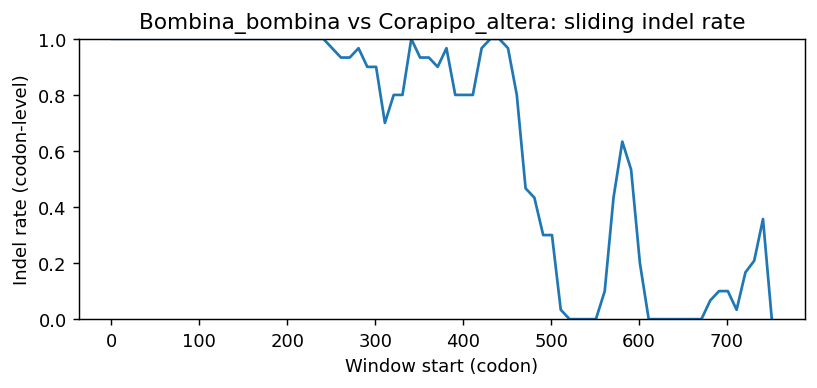
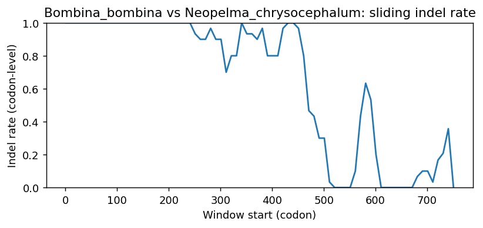

Ortholog Divergence Report
Input: ELOVL3.valid.longest.fa · N sequences: 306 · Aligned length: 754 codons
Reference: Bombina_bombina
Quick risk overview
- LOW: 0
- INTERMEDIATE: 0
- HIGH: 46665


Composition & complexity per sequence
Saved as per_sequence_composition.csv. High low-complexity or repeat content can reduce BLAST sensitivity due to soft masking.
| id | GC | GC skew | CpG dens. | AA LCR frac | NT repeat frac | AA len | CDS len |
|---|---|---|---|---|---|---|---|
| Bombina_bombina | 0.45069 | 0.04709 | 0.02 | 0.04494 | 0.7603 | 267 | 801 |
| Molothrus_ater | 0.45098 | -0.03261 | 0.01963 | 0.04412 | 0.6973 | 272 | 816 |
| Miniopterus_natalensis | 0.50186 | -0.0963 | 0.01241 | 0.0 | 0.77076 | 269 | 807 |
| Cricetulus_griseus | 0.47478 | -0.07254 | 0.01478 | 0.05166 | 0.77614 | 271 | 813 |
| Nycticebus_coucang | 0.52158 | -0.07394 | 0.02757 | 0.04683 | 0.78145 | 363 | 1089 |
| Lagopus_muta | 0.47354 | -0.03352 | 0.01854 | 0.0 | 0.7619 | 252 | 756 |
| Oenanthe_melanoleuca | 0.45711 | -0.00804 | 0.01963 | 0.0 | 0.69118 | 272 | 816 |
| Petaurus_breviceps_papuanus | 0.45647 | -0.06812 | 0.01743 | 0.11194 | 0.72886 | 268 | 804 |
| Microcebus_murinus | 0.48872 | -0.09744 | 0.0138 | 0.04887 | 0.79073 | 266 | 798 |
| Canis_lupus_dingo | 0.49875 | -0.10553 | 0.0138 | 0.0 | 0.78947 | 266 | 798 |
| Bufo_gargarizans | 0.43321 | 0.00288 | 0.01875 | 0.0 | 0.71536 | 267 | 801 |
| Ursus_americanus | 0.51852 | -0.09524 | 0.01978 | 0.0 | 0.79012 | 270 | 810 |
| Heterocephalus_glaber | 0.55926 | -0.08168 | 0.03585 | 0.0 | 0.73333 | 270 | 810 |
| Microtus_oregoni | 0.48462 | -0.11168 | 0.0234 | 0.04797 | 0.74539 | 271 | 813 |
| Sciurus_carolinensis | 0.48025 | -0.11568 | 0.01112 | 0.05185 | 0.76914 | 270 | 810 |
| Zonotrichia_albicollis | 0.4473 | -0.03014 | 0.0184 | 0.10294 | 0.69975 | 272 | 816 |
| Gracilinanus_agilis | 0.47037 | -0.04987 | 0.01731 | 0.04815 | 0.74444 | 270 | 810 |
| Sorex_fumeus | 0.52963 | -0.10956 | 0.03461 | 0.04444 | 0.77284 | 270 | 810 |
| Pan_troglodytes | 0.51235 | -0.13253 | 0.02101 | 0.04444 | 0.79383 | 270 | 810 |
| Trachemys_scripta_elegans | 0.54321 | 0.00909 | 0.03956 | 0.0 | 0.75556 | 270 | 810 |
| Vulpes_lagopus | 0.5 | -0.10276 | 0.01506 | 0.0 | 0.80201 | 266 | 798 |
| Phodopus_roborovskii | 0.49569 | -0.067 | 0.0197 | 0.04797 | 0.72571 | 271 | 813 |
| Bubalus_bubalis | 0.50741 | -0.08516 | 0.02225 | 0.04444 | 0.74444 | 270 | 810 |
| Mustela_putorius_furo | 0.49753 | -0.067 | 0.01607 | 0.0 | 0.74568 | 270 | 810 |
| Rousettus_aegyptiacus | 0.46667 | -0.10053 | 0.01112 | 0.0 | 0.76543 | 270 | 810 |
| Oryctolagus_cuniculus | 0.56049 | -0.10573 | 0.03956 | 0.04444 | 0.79753 | 270 | 810 |
| Dermochelys_coriacea | 0.55817 | 0.01804 | 0.04143 | 0.0604 | 0.73378 | 298 | 894 |
| Rattus_norvegicus | 0.48462 | -0.06091 | 0.03079 | 0.04797 | 0.75646 | 271 | 813 |
| Mirounga_leonina | 0.5 | -0.11605 | 0.01236 | 0.0 | 0.74321 | 270 | 810 |
| Mauremys_mutica | 0.55185 | 0.00671 | 0.0445 | 0.0 | 0.75309 | 270 | 810 |
| Manis_pentadactyla | 0.5 | -0.0716 | 0.01483 | 0.0 | 0.7321 | 270 | 810 |
| Apodemus_sylvaticus | 0.51661 | -0.08571 | 0.02956 | 0.05166 | 0.71587 | 271 | 813 |
| Symphalangus_syndactylus | 0.50741 | -0.10949 | 0.01978 | 0.0 | 0.76667 | 270 | 810 |
| Mustela_erminea | 0.49753 | -0.067 | 0.01731 | 0.0 | 0.74815 | 270 | 810 |
| Manis_javanica | 0.50123 | -0.07882 | 0.01854 | 0.0 | 0.7284 | 270 | 810 |
| Rhinopithecus_roxellana | 0.51481 | -0.10791 | 0.02225 | 0.0 | 0.78642 | 270 | 810 |
| Cygnus_atratus | 0.55638 | -0.04677 | 0.05211 | 0.0 | 0.75713 | 269 | 807 |
| Dromaius_novaehollandiae | 0.48962 | 0.01746 | 0.03056 | 0.08791 | 0.77656 | 273 | 819 |
| Panthera_pardus | 0.51235 | -0.10361 | 0.02596 | 0.0 | 0.77284 | 270 | 810 |
| Arvicola_amphibius | 0.48708 | -0.08586 | 0.0234 | 0.04428 | 0.71833 | 271 | 813 |
| Arvicanthis_niloticus | 0.48339 | -0.07379 | 0.02217 | 0.04428 | 0.74047 | 271 | 813 |
| Cervus_elaphus | 0.50494 | -0.09046 | 0.01854 | 0.0 | 0.74321 | 270 | 810 |
| Callithrix_jacchus | 0.52593 | -0.07981 | 0.02101 | 0.0 | 0.75679 | 270 | 810 |
| Taeniopygia_guttata | 0.44543 | -0.07285 | 0.02663 | 0.10619 | 0.67552 | 113 | 339 |
| Mus_pahari | 0.51481 | -0.05036 | 0.02349 | 0.05185 | 0.75556 | 270 | 810 |
| Leopardus_geoffroyi | 0.50494 | -0.11002 | 0.02349 | 0.0 | 0.7679 | 270 | 810 |
| Hyaena_hyaena | 0.50988 | -0.10412 | 0.01978 | 0.0 | 0.73333 | 270 | 810 |
| Xenopus_tropicalis | 0.43086 | 0.05444 | 0.02101 | 0.0 | 0.74444 | 270 | 810 |
| Ochotona_princeps | 0.56173 | -0.0989 | 0.0309 | 0.0963 | 0.7358 | 270 | 810 |
| Eleutherodactylus_coqui | 0.42447 | 0.0 | 0.02 | 0.0 | 0.7578 | 267 | 801 |
| Cynocephalus_volans | 0.49506 | -0.10723 | 0.01978 | 0.0 | 0.78148 | 270 | 810 |
| Terrapene_triunguis | 0.55432 | 0.01114 | 0.04574 | 0.0 | 0.74815 | 270 | 810 |
| Antechinus_flavipes | 0.45833 | -0.07438 | 0.02023 | 0.06061 | 0.71465 | 264 | 792 |
| Mauremys_reevesii | 0.52619 | 0.00452 | 0.03218 | 0.0 | 0.74286 | 280 | 840 |
| Pongo_abelii | 0.51003 | -0.11548 | 0.02133 | 0.0 | 0.78571 | 266 | 798 |
| Phoca_vitulina | 0.50864 | -0.12621 | 0.0136 | 0.0 | 0.74321 | 270 | 810 |
| Macaca_thibetana_thibetana | 0.51235 | -0.11807 | 0.01854 | 0.0 | 0.76914 | 270 | 810 |
| Meles_meles | 0.51235 | -0.0747 | 0.01978 | 0.0 | 0.77778 | 270 | 810 |
| Parus_major | 0.44975 | -0.01907 | 0.02209 | 0.05147 | 0.68015 | 272 | 816 |
| Moschus_berezovskii | 0.49506 | -0.09726 | 0.01607 | 0.04444 | 0.77778 | 270 | 810 |
| Bos_taurus | 0.50617 | -0.07805 | 0.02349 | 0.04444 | 0.73457 | 270 | 810 |
| Grus_americana | 0.51059 | 0.02183 | 0.0346 | 0.1204 | 0.7447 | 299 | 897 |
| Chamaea_fasciata | 0.45588 | -0.05376 | 0.02086 | 0.04779 | 0.69363 | 272 | 816 |
| Hylobates_moloch | 0.50617 | -0.10732 | 0.01854 | 0.0 | 0.76667 | 270 | 810 |
| Camelus_ferus | 0.49136 | -0.07538 | 0.01112 | 0.04444 | 0.73951 | 270 | 810 |
| Trichechus_manatus_latirostris | 0.49569 | -0.13151 | 0.01355 | 0.05166 | 0.77368 | 271 | 813 |
| Peromyscus_eremicus | 0.4797 | -0.06154 | 0.01601 | 0.05166 | 0.76384 | 271 | 813 |
| Accipiter_gentilis | 0.51282 | -0.03478 | 0.03571 | 0.0602 | 0.73133 | 299 | 897 |
| Alexandromys_fortis | 0.48954 | -0.09045 | 0.0234 | 0.04797 | 0.73309 | 271 | 813 |
| Monodon_monoceros | 0.49037 | -0.0997 | 0.01187 | 0.0 | 0.77926 | 225 | 675 |
| Ochotona_curzoniae | 0.55185 | -0.10067 | 0.02596 | 0.04444 | 0.78272 | 270 | 810 |
| Equus_asinus | 0.5284 | -0.07009 | 0.02101 | 0.04815 | 0.81852 | 270 | 810 |
| Prionailurus_bengalensis | 0.50741 | -0.10949 | 0.02472 | 0.0 | 0.77778 | 270 | 810 |
| Myotis_yumanensis | 0.52099 | -0.09479 | 0.02349 | 0.0 | 0.70988 | 270 | 810 |
| Galeopterus_variegatus | 0.49383 | -0.105 | 0.01731 | 0.0 | 0.7642 | 270 | 810 |
| Talpa_occidentalis | 0.49259 | -0.07769 | 0.0136 | 0.0 | 0.75062 | 270 | 810 |
| Emys_orbicularis | 0.55185 | 0.00671 | 0.04326 | 0.0 | 0.74815 | 270 | 810 |
| Ursus_maritimus | 0.51852 | -0.09524 | 0.02101 | 0.0 | 0.78889 | 270 | 810 |
| Cavia_porcellus | 0.5203 | -0.07801 | 0.0234 | 0.0 | 0.70726 | 271 | 813 |
| Rhinolophus_ferrumequinum | 0.50549 | -0.09179 | 0.022 | 0.0 | 0.75092 | 273 | 819 |
| Capra_hircus | 0.49383 | -0.095 | 0.01731 | 0.0 | 0.76296 | 270 | 810 |
| Bos_indicus | 0.50617 | -0.07805 | 0.02349 | 0.04444 | 0.73457 | 270 | 810 |
| Vombatus_ursinus | 0.46642 | -0.072 | 0.01619 | 0.09328 | 0.71393 | 268 | 804 |
| Oxyura_jamaicensis | 0.55019 | -0.04054 | 0.04715 | 0.0 | 0.75836 | 269 | 807 |
| Hippopotamus_amphibius_kiboko | 0.5037 | -0.10294 | 0.01854 | 0.0 | 0.75679 | 270 | 810 |
| Eumetopias_jubatus | 0.51111 | -0.11594 | 0.01731 | 0.0 | 0.7642 | 270 | 810 |
| Bos_indicus_x_Bos_taurus | 0.50617 | -0.07805 | 0.02349 | 0.04444 | 0.73457 | 270 | 810 |
| Cinclus_cinclus | 0.43505 | -0.03099 | 0.01472 | 0.05515 | 0.66299 | 272 | 816 |
| Lagopus_leucura | 0.47487 | -0.03064 | 0.02119 | 0.0 | 0.75661 | 252 | 756 |
| Bos_javanicus | 0.50494 | -0.08068 | 0.02349 | 0.04444 | 0.73704 | 270 | 810 |
| Saccopteryx_bilineata | 0.49259 | -0.09273 | 0.01607 | 0.0 | 0.75185 | 270 | 810 |
| Zalophus_californianus | 0.51111 | -0.11594 | 0.01731 | 0.0 | 0.7642 | 270 | 810 |
| Ammospiza_nelsoni | 0.45105 | 0.0 | 0.01861 | 0.0 | 0.68897 | 269 | 807 |
| Ursus_arctos | 0.51728 | -0.09308 | 0.02101 | 0.0 | 0.78395 | 270 | 810 |
| Fukomys_damarensis | 0.54938 | -0.07865 | 0.03337 | 0.0 | 0.75309 | 270 | 810 |
| Ficedula_albicollis | 0.44491 | -0.05956 | 0.01397 | 0.0 | 0.68898 | 239 | 717 |
| Chinchilla_lanigera | 0.60524 | -0.07155 | 0.05948 | 0.0 | 0.7281 | 331 | 993 |
| Leptonychotes_weddellii | 0.5037 | -0.11275 | 0.0136 | 0.0 | 0.75185 | 270 | 810 |
| Gopherus_flavomarginatus | 0.55432 | 0.00223 | 0.04821 | 0.0 | 0.76543 | 270 | 810 |
| Pteropus_giganteus | 0.48272 | -0.0844 | 0.01607 | 0.05185 | 0.73951 | 270 | 810 |
| Phyllostomus_discolor | 0.51876 | -0.08085 | 0.02983 | 0.04967 | 0.68874 | 302 | 906 |
| Suncus_etruscus | 0.4716 | -0.12042 | 0.01607 | 0.0 | 0.77654 | 270 | 810 |
| Malaclemys_terrapin_pileata | 0.54568 | 0.00452 | 0.04079 | 0.0 | 0.75309 | 270 | 810 |
| Serinus_canaria | 0.43995 | -0.02507 | 0.01595 | 0.05882 | 0.6875 | 272 | 816 |
| Melozone_crissalis | 0.44212 | -0.05994 | 0.01257 | 0.0 | 0.67922 | 239 | 717 |
| Myotis_lucifugus | 0.52099 | -0.09005 | 0.02349 | 0.0 | 0.6963 | 270 | 810 |
| Carlito_syrichta | 0.57253 | -0.11051 | 0.04173 | 0.0 | 0.78704 | 216 | 648 |
| Melospiza_melodia_melodia | 0.44981 | -0.00826 | 0.01861 | 0.04461 | 0.70632 | 269 | 807 |
| Ornithorhynchus_anatinus | 0.61509 | -0.04294 | 0.06297 | 0.09434 | 0.73082 | 265 | 795 |
| Oryx_dammah | 0.49506 | -0.09726 | 0.0136 | 0.04444 | 0.74568 | 270 | 810 |
| Vulpes_vulpes | 0.5 | -0.10777 | 0.01506 | 0.0 | 0.79699 | 266 | 798 |
| Sapajus_apella | 0.51481 | -0.09832 | 0.01978 | 0.0 | 0.78395 | 270 | 810 |
| Pogoniulus_pusillus | 0.46446 | -0.00264 | 0.01718 | 0.04412 | 0.79289 | 272 | 816 |
| Mirounga_angustirostris | 0.5 | -0.11605 | 0.01236 | 0.0 | 0.74321 | 270 | 810 |
| Condylura_cristata | 0.48765 | -0.07342 | 0.0136 | 0.06296 | 0.73827 | 270 | 810 |
| Pteropus_vampyrus | 0.48272 | -0.0844 | 0.01607 | 0.05185 | 0.75185 | 270 | 810 |
| Hipposideros_armiger | 0.50427 | -0.08959 | 0.02078 | 0.0 | 0.72161 | 273 | 819 |
| Marmota_monax | 0.47654 | -0.07254 | 0.01112 | 0.05185 | 0.72963 | 270 | 810 |
| Colobus_angolensis_palliatus | 0.51111 | -0.10145 | 0.02101 | 0.0 | 0.78642 | 270 | 810 |
| Neofelis_nebulosa | 0.51235 | -0.10843 | 0.02472 | 0.0 | 0.77284 | 270 | 810 |
| Alligator_sinensis | 0.49929 | 0.0625 | 0.01705 | 0.05106 | 0.75177 | 235 | 705 |
| Lepus_europaeus | 0.55926 | -0.11258 | 0.03956 | 0.04444 | 0.77778 | 270 | 810 |
| Myodes_glareolus | 0.48831 | -0.08312 | 0.02709 | 0.05166 | 0.77368 | 271 | 813 |
| Motacilla_alba_alba | 0.45098 | -0.05978 | 0.01963 | 0.0 | 0.68505 | 272 | 816 |
| Harpia_harpyja | 0.51171 | -0.02832 | 0.03795 | 0.0602 | 0.75585 | 299 | 897 |
| Chionomys_nivalis | 0.492 | -0.085 | 0.02709 | 0.04797 | 0.77737 | 271 | 813 |
| Lontra_canadensis | 0.5037 | -0.07353 | 0.01483 | 0.0 | 0.76296 | 270 | 810 |
| Pan_paniscus | 0.51358 | -0.12981 | 0.02225 | 0.04444 | 0.8037 | 270 | 810 |
| Dasypus_novemcinctus | 0.56902 | 0.01538 | 0.05458 | 0.18384 | 0.71313 | 495 | 1485 |
| Aotus_nancymaae | 0.51481 | -0.08393 | 0.01978 | 0.0 | 0.7679 | 270 | 810 |
| Hyla_sarda | 0.42322 | 0.01475 | 0.01625 | 0.0 | 0.74282 | 267 | 801 |
| Capricornis_sumatraensis | 0.49627 | -0.10276 | 0.01743 | 0.04478 | 0.76119 | 268 | 804 |
| Nyctereutes_procyonoides | 0.50251 | -0.09227 | 0.01506 | 0.0 | 0.79198 | 266 | 798 |
| Ailuropoda_melanoleuca | 0.50988 | -0.09443 | 0.01731 | 0.0 | 0.77531 | 270 | 810 |
| Neogale_vison | 0.50123 | -0.07882 | 0.01978 | 0.0 | 0.77407 | 270 | 810 |
| Lynx_rufus | 0.50617 | -0.1122 | 0.02472 | 0.0 | 0.77778 | 270 | 810 |
| Tupaia_chinensis | 0.54121 | -0.10455 | 0.03818 | 0.0 | 0.7663 | 271 | 813 |
| Pongo_pygmaeus | 0.51462 | -0.11364 | 0.01991 | 0.0 | 0.79181 | 285 | 855 |
| Molothrus_aeneus | 0.44975 | -0.04087 | 0.01718 | 0.04779 | 0.68627 | 272 | 816 |
| Corvus_hawaiiensis | 0.46691 | -0.02362 | 0.02209 | 0.08824 | 0.6777 | 272 | 816 |
| Corapipo_altera | 0.45274 | -0.02198 | 0.01245 | 0.04478 | 0.74005 | 268 | 804 |
| Chelonoidis_abingdonii | 0.55062 | 0.01345 | 0.0445 | 0.0 | 0.76543 | 270 | 810 |
| Bos_mutus | 0.5037 | -0.08333 | 0.02101 | 0.04815 | 0.74198 | 270 | 810 |
| Hyperolius_riggenbachi | 0.4474 | 0.0085 | 0.02284 | 0.0 | 0.75412 | 263 | 789 |
| Lemur_catta | 0.51775 | -0.09735 | 0.02752 | 0.04467 | 0.79152 | 291 | 873 |
| Vidua_chalybeata | 0.43873 | -0.03911 | 0.0135 | 0.04412 | 0.63603 | 272 | 816 |
| Nomascus_leucogenys | 0.50494 | -0.11002 | 0.01854 | 0.0 | 0.76667 | 270 | 810 |
| Panthera_uncia | 0.51358 | -0.10577 | 0.02596 | 0.0 | 0.77284 | 270 | 810 |
| Myotis_brandtii | 0.51975 | -0.09739 | 0.02101 | 0.0 | 0.69753 | 270 | 810 |
| Vicugna_pacos | 0.49383 | -0.08 | 0.00989 | 0.04444 | 0.74568 | 270 | 810 |
| Macaca_nemestrina | 0.51111 | -0.11111 | 0.01978 | 0.0 | 0.76667 | 270 | 810 |
| Papio_anubis | 0.56283 | -0.04186 | 0.04978 | 0.03665 | 0.77923 | 382 | 1146 |
| Suricata_suricatta | 0.50617 | -0.1122 | 0.02101 | 0.0 | 0.76049 | 270 | 810 |
| Macaca_fascicularis | 0.51111 | -0.12077 | 0.01731 | 0.0 | 0.7716 | 270 | 810 |
| Mus_musculus | 0.48585 | -0.07848 | 0.02463 | 0.05166 | 0.75277 | 271 | 813 |
| Sarcophilus_harrisii | 0.49173 | -0.02564 | 0.03155 | 0.07329 | 0.72656 | 423 | 1269 |
| Prinia_subflava | 0.45466 | -0.04043 | 0.02086 | 0.09926 | 0.64093 | 272 | 816 |
| Mustela_nigripes | 0.49753 | -0.067 | 0.01607 | 0.0 | 0.74568 | 270 | 810 |
| Erinaceus_europaeus | 0.46366 | -0.0973 | 0.01129 | 0.0 | 0.79198 | 266 | 798 |
| Camelus_dromedarius | 0.49136 | -0.07538 | 0.01112 | 0.04444 | 0.73951 | 270 | 810 |
| Gorilla_gorilla_gorilla | 0.50988 | -0.13317 | 0.02349 | 0.0 | 0.80617 | 270 | 810 |
| Haemorhous_mexicanus | 0.4473 | -0.03014 | 0.02086 | 0.05882 | 0.66789 | 272 | 816 |
| Budorcas_taxicolor | 0.4963 | -0.10448 | 0.01483 | 0.04444 | 0.76173 | 270 | 810 |
| Ictidomys_tridecemlineatus | 0.48227 | -0.09314 | 0.01183 | 0.0922 | 0.72931 | 282 | 846 |
| Anser_cygnoides | 0.55886 | -0.04656 | 0.05707 | 0.0 | 0.75465 | 269 | 807 |
| Felis_catus | 0.5037 | -0.11275 | 0.02472 | 0.0 | 0.77654 | 270 | 810 |
| Mustela_lutreola | 0.4963 | -0.06468 | 0.01483 | 0.0 | 0.74568 | 270 | 810 |
| Pteropus_alecto | 0.47778 | -0.08527 | 0.01483 | 0.0963 | 0.73951 | 270 | 810 |
| Orycteropus_afer_afer | 0.48162 | -0.09415 | 0.0135 | 0.0 | 0.71569 | 272 | 816 |
| Corvus_kubaryi | 0.46936 | -0.01305 | 0.02331 | 0.08824 | 0.64583 | 272 | 816 |
| Homo_sapiens | 0.50864 | -0.12136 | 0.01978 | 0.0 | 0.80864 | 270 | 810 |
| Myotis_davidii | 0.51975 | -0.07838 | 0.02101 | 0.0 | 0.71605 | 270 | 810 |
| Melospiza_georgiana | 0.44853 | 0.0 | 0.0184 | 0.05882 | 0.70098 | 272 | 816 |
| Elephantulus_edwardii | 0.46371 | -0.08753 | 0.01232 | 0.0 | 0.73801 | 271 | 813 |
| Mandrillus_leucophaeus | 0.51111 | -0.11111 | 0.01854 | 0.0 | 0.77654 | 270 | 810 |
| Macaca_mulatta | 0.51111 | -0.12077 | 0.01731 | 0.0 | 0.7716 | 270 | 810 |
| Pygoscelis_adeliae | 0.48072 | -0.06017 | 0.02069 | 0.04959 | 0.69008 | 242 | 726 |
| Halichoerus_grypus | 0.50617 | -0.12195 | 0.0136 | 0.0 | 0.74321 | 270 | 810 |
| Echinops_telfairi | 0.47847 | -0.10026 | 0.01601 | 0.0 | 0.75031 | 271 | 813 |
| Rhinopithecus_bieti | 0.51605 | -0.10526 | 0.02349 | 0.0 | 0.78642 | 270 | 810 |
| Ovis_aries | 0.49012 | -0.08816 | 0.01607 | 0.0 | 0.74938 | 270 | 810 |
| Panthera_onca | 0.51235 | -0.10361 | 0.02596 | 0.0 | 0.77284 | 270 | 810 |
| Dipodomys_ordii | 0.45865 | -0.10929 | 0.01506 | 0.0 | 0.76441 | 266 | 798 |
| Pteronotus_mesoamericanus | 0.49005 | -0.07107 | 0.01494 | 0.0 | 0.75124 | 268 | 804 |
| Cygnus_olor | 0.55514 | -0.04464 | 0.05087 | 0.0 | 0.75465 | 269 | 807 |
| Apus_apus | 0.48529 | 0.0303 | 0.01963 | 0.04412 | 0.68995 | 272 | 816 |
| Cercocebus_atys | 0.51235 | -0.11325 | 0.01978 | 0.0 | 0.77654 | 270 | 810 |
| Meleagris_gallopavo | 0.49938 | 0.00248 | 0.02978 | 0.0 | 0.73606 | 269 | 807 |
| Octodon_degus | 0.53951 | -0.1167 | 0.03214 | 0.04815 | 0.72099 | 270 | 810 |
| Onychostruthus_taczanowskii | 0.45466 | -0.03504 | 0.02086 | 0.09926 | 0.64828 | 272 | 816 |
| Dama_dama | 0.50494 | -0.08557 | 0.01978 | 0.04444 | 0.74321 | 270 | 810 |
| Puma_yagouaroundi | 0.50617 | -0.10732 | 0.02349 | 0.0 | 0.77531 | 270 | 810 |
| Saimiri_boliviensis | 0.52593 | -0.10798 | 0.01854 | 0.0 | 0.77037 | 270 | 810 |
| Acomys_russatus | 0.508 | -0.07506 | 0.02709 | 0.04797 | 0.77614 | 271 | 813 |
| Meriones_unguiculatus | 0.53156 | -0.10575 | 0.03554 | 0.04142 | 0.75641 | 338 | 1014 |
| Chrysemys_picta_bellii | 0.54815 | 0.0045 | 0.04203 | 0.0 | 0.75556 | 270 | 810 |
| Agelaius_phoeniceus | 0.45098 | -0.02174 | 0.01718 | 0.04779 | 0.67525 | 272 | 816 |
| Emydura_macquarii_macquarii | 0.55185 | 0.03356 | 0.04574 | 0.0 | 0.7679 | 270 | 810 |
| Grammomys_surdaster | 0.492 | -0.055 | 0.02463 | 0.04428 | 0.72325 | 271 | 813 |
| Delphinapterus_leucas | 0.49037 | -0.0997 | 0.01335 | 0.0 | 0.77926 | 225 | 675 |
| Elephas_maximus_indicus | 0.50489 | -0.11828 | 0.02065 | 0.0 | 0.7709 | 307 | 921 |
| Sus_scrofa | 0.50123 | -0.10345 | 0.01607 | 0.0 | 0.72963 | 270 | 810 |
| Numida_meleagris | 0.4881 | -0.05691 | 0.02649 | 0.0 | 0.79233 | 252 | 756 |
| Bufo_bufo | 0.43123 | 0.01149 | 0.01737 | 0.0 | 0.70012 | 269 | 807 |
| Centrocercus_urophasianus | 0.48148 | -0.01099 | 0.02252 | 0.0 | 0.7619 | 252 | 756 |
| Spea_bombifrons | 0.44819 | 0.10864 | 0.02 | 0.04869 | 0.70662 | 267 | 801 |
| Phasianus_colchicus | 0.48366 | -0.00541 | 0.02618 | 0.0 | 0.7634 | 255 | 765 |
| Callorhinus_ursinus | 0.51111 | -0.11594 | 0.01731 | 0.0 | 0.7642 | 270 | 810 |
| Otolemur_garnettii | 0.49123 | -0.04592 | 0.01757 | 0.0 | 0.77569 | 266 | 798 |
| Ammospiza_caudacuta | 0.45229 | 0.00274 | 0.01985 | 0.0 | 0.68897 | 269 | 807 |
| Monodelphis_domestica | 0.46667 | -0.0582 | 0.01731 | 0.04815 | 0.74568 | 270 | 810 |
| Mastomys_coucha | 0.49446 | -0.08955 | 0.02586 | 0.05166 | 0.73678 | 271 | 813 |
| Artibeus_jamaicensis | 0.49123 | -0.07653 | 0.01757 | 0.04511 | 0.75313 | 266 | 798 |
| Colius_striatus | 0.53856 | -0.03926 | 0.0523 | 0.10448 | 0.74627 | 268 | 804 |
| Diceros_bicornis_minor | 0.5 | -0.10617 | 0.01607 | 0.0 | 0.79012 | 270 | 810 |
| Lutra_lutra | 0.50741 | -0.06569 | 0.01483 | 0.0 | 0.75926 | 270 | 810 |
| Phyllostomus_hastatus | 0.50409 | -0.03944 | 0.02342 | 0.04211 | 0.73333 | 285 | 855 |
| Dipodomys_spectabilis | 0.46366 | -0.11351 | 0.01506 | 0.0 | 0.76441 | 266 | 798 |
| Microtus_ochrogaster | 0.49323 | -0.09227 | 0.0234 | 0.04797 | 0.75769 | 271 | 813 |
| Eulemur_rufifrons | 0.51504 | -0.09976 | 0.02258 | 0.04887 | 0.76441 | 266 | 798 |
| Caretta_caretta | 0.55185 | 0.02908 | 0.04697 | 0.0 | 0.74815 | 270 | 810 |
| Bubalus_kerabau | 0.50741 | -0.09489 | 0.02349 | 0.04444 | 0.75062 | 270 | 810 |
| Panthera_tigris | 0.51235 | -0.10361 | 0.02596 | 0.0 | 0.77284 | 270 | 810 |
| Empidonax_traillii | 0.45703 | -0.04274 | 0.01956 | 0.0 | 0.70573 | 256 | 768 |
| Rana_temporaria | 0.44819 | 0.03621 | 0.02375 | 0.04494 | 0.77778 | 267 | 801 |
| Aquila_chrysaetos_chrysaetos | 0.51171 | -0.02397 | 0.03795 | 0.0602 | 0.75028 | 299 | 897 |
| Gallus_gallus | 0.48545 | -0.00817 | 0.02517 | 0.0 | 0.73148 | 252 | 756 |
| Alligator_mississippiensis | 0.52434 | 0.08095 | 0.03375 | 0.04494 | 0.77653 | 267 | 801 |
| Mus_caroli | 0.49446 | -0.0597 | 0.02956 | 0.05166 | 0.77737 | 271 | 813 |
| Anas_acuta | 0.5539 | -0.03803 | 0.05087 | 0.0 | 0.76084 | 269 | 807 |
| Aythya_fuligula | 0.55266 | -0.05381 | 0.05087 | 0.0 | 0.77323 | 269 | 807 |
| Trachypithecus_francoisi | 0.51235 | -0.11325 | 0.01978 | 0.0 | 0.78642 | 270 | 810 |
| Zonotrichia_leucophrys_gambelii | 0.44853 | -0.03279 | 0.0184 | 0.10294 | 0.6924 | 272 | 816 |
| Coturnix_japonica | 0.47487 | 0.00836 | 0.01987 | 0.0 | 0.74868 | 252 | 756 |
| Marmota_flaviventris | 0.47654 | -0.07254 | 0.01112 | 0.05185 | 0.72963 | 270 | 810 |
| Neopelma_chrysocephalum | 0.46494 | -0.02116 | 0.01355 | 0.0 | 0.75769 | 271 | 813 |
| Myotis_myotis | 0.51481 | -0.08873 | 0.01731 | 0.0 | 0.71605 | 270 | 810 |
| Phascolarctos_cinereus | 0.46398 | -0.03684 | 0.01711 | 0.04396 | 0.69719 | 273 | 819 |
| Haliaeetus_albicilla | 0.50613 | -0.04846 | 0.03571 | 0.0602 | 0.74247 | 299 | 897 |
| Equus_quagga | 0.51282 | -0.14286 | 0.02202 | 0.0 | 0.80586 | 182 | 546 |
| Odocoileus_virginianus | 0.50617 | -0.0878 | 0.01978 | 0.0 | 0.7358 | 270 | 810 |
| Acinonyx_jubatus | 0.51435 | -0.12446 | 0.02431 | 0.0 | 0.78698 | 302 | 906 |
| Sturnira_hondurensis | 0.52083 | -0.072 | 0.03128 | 0.0 | 0.74479 | 320 | 960 |
| Theropithecus_gelada | 0.51358 | -0.11538 | 0.01978 | 0.0 | 0.77654 | 270 | 810 |
| Myiozetetes_cayanensis | 0.46165 | -0.05136 | 0.01955 | 0.0 | 0.69874 | 239 | 717 |
| Passer_montanus | 0.45711 | -0.03485 | 0.02086 | 0.05515 | 0.66054 | 272 | 816 |
| Aptenodytes_forsteri | 0.51852 | 0.0 | 0.0382 | 0.0404 | 0.70595 | 297 | 891 |
| Rattus_rattus | 0.48708 | -0.05556 | 0.03079 | 0.04797 | 0.75277 | 271 | 813 |
| Ceratotherium_simum_simum | 0.50247 | -0.10074 | 0.01854 | 0.0 | 0.79753 | 270 | 810 |
| Psammomys_obesus | 0.50308 | -0.06112 | 0.02217 | 0.05166 | 0.75031 | 271 | 813 |
| Panthera_leo | 0.51111 | -0.10145 | 0.02596 | 0.0 | 0.77778 | 270 | 810 |
| Muntiacus_reevesi | 0.50123 | -0.08867 | 0.01978 | 0.0 | 0.7358 | 270 | 810 |
| Trichosurus_vulpecula | 0.46766 | -0.08511 | 0.02117 | 0.10448 | 0.74254 | 268 | 804 |
| Canis_lupus_familiaris | 0.49875 | -0.10553 | 0.0138 | 0.0 | 0.78947 | 266 | 798 |
| Propithecus_coquereli | 0.51504 | -0.08516 | 0.02008 | 0.04887 | 0.79449 | 266 | 798 |
| Pipistrellus_kuhlii | 0.55679 | -0.09978 | 0.03832 | 0.0 | 0.70247 | 270 | 810 |
| Tympanuchus_pallidicinctus | 0.48413 | -0.01093 | 0.02384 | 0.0 | 0.75926 | 252 | 756 |
| Myotis_daubentonii | 0.51852 | -0.08571 | 0.02101 | 0.0 | 0.71728 | 270 | 810 |
| Saccopteryx_leptura | 0.49383 | -0.09 | 0.01607 | 0.0 | 0.75679 | 270 | 810 |
| Prionailurus_viverrinus | 0.51545 | -0.12634 | 0.02541 | 0.0 | 0.79581 | 302 | 906 |
| Dipodomys_merriami | 0.46134 | -0.1044 | 0.01269 | 0.04943 | 0.76299 | 263 | 789 |
| Gopherus_evgoodei | 0.55185 | 0.00224 | 0.04574 | 0.04444 | 0.75309 | 270 | 810 |
| Piliocolobus_tephrosceles | 0.51235 | -0.10361 | 0.01978 | 0.0 | 0.78395 | 270 | 810 |
| Balaenoptera_musculus | 0.4963 | -0.10448 | 0.01187 | 0.0 | 0.78222 | 225 | 675 |
| Cyrtonyx_montezumae | 0.4828 | -0.03014 | 0.01987 | 0.05159 | 0.73016 | 252 | 756 |
| Dromiciops_gliroides | 0.45522 | -0.03825 | 0.02117 | 0.0597 | 0.67786 | 268 | 804 |
| Puma_concolor | 0.51957 | -0.13247 | 0.02027 | 0.0 | 0.76383 | 247 | 741 |
| Enhydra_lutris_kenyoni | 0.50741 | -0.06569 | 0.01607 | 0.0 | 0.74691 | 270 | 810 |
| Chlorocebus_sabaeus | 0.50864 | -0.11165 | 0.01978 | 0.0 | 0.77407 | 270 | 810 |
| Anas_platyrhynchos | 0.55266 | -0.02691 | 0.05087 | 0.0 | 0.76084 | 269 | 807 |
| Sturnus_vulgaris | 0.44362 | -0.03911 | 0.01489 | 0.10037 | 0.73482 | 269 | 807 |
| Rhea_pennata | 0.49938 | -0.01241 | 0.03102 | 0.04833 | 0.7311 | 269 | 807 |
| Ovis_canadensis | 0.49136 | -0.08543 | 0.01607 | 0.0 | 0.74938 | 270 | 810 |
| Mesocricetus_auratus | 0.49938 | -0.06897 | 0.02094 | 0.05166 | 0.76138 | 271 | 813 |
| Castor_canadensis | 0.49012 | -0.06297 | 0.01483 | 0.05185 | 0.77654 | 270 | 810 |
| Chrysochloris_asiatica | 0.47478 | -0.10363 | 0.01724 | 0.05166 | 0.71341 | 271 | 813 |
| Nannospalax_galili | 0.47778 | -0.07494 | 0.01236 | 0.05185 | 0.7642 | 270 | 810 |
| Bison_bison_bison | 0.50617 | -0.07805 | 0.02349 | 0.04444 | 0.73457 | 270 | 810 |
| Tachyglossus_aculeatus | 0.60503 | -0.04366 | 0.05919 | 0.04906 | 0.7434 | 265 | 795 |
| Aphelocoma_coerulescens | 0.47059 | -0.03646 | 0.02209 | 0.04412 | 0.66789 | 272 | 816 |
| Dendropsophus_ebraccatus | 0.42072 | 0.0089 | 0.0175 | 0.0 | 0.7166 | 267 | 801 |
| Pyrgilauda_ruficollis | 0.45588 | -0.03763 | 0.02209 | 0.09926 | 0.6299 | 272 | 816 |
| Perognathus_longimembris_pacificus | 0.47118 | -0.12766 | 0.01506 | 0.0 | 0.75564 | 266 | 798 |
| Passer_domesticus | 0.45833 | -0.03743 | 0.01963 | 0.05515 | 0.65809 | 272 | 816 |
| Cervus_canadensis | 0.50494 | -0.09046 | 0.01854 | 0.0 | 0.74321 | 270 | 810 |
| Camelus_bactrianus | 0.49136 | -0.07538 | 0.01112 | 0.04444 | 0.73951 | 270 | 810 |
| Desmodus_rotundus | 0.50251 | -0.04738 | 0.02509 | 0.0 | 0.74812 | 266 | 798 |
| Indicator_indicator | 0.46936 | 0.00261 | 0.02209 | 0.08824 | 0.78431 | 272 | 816 |
| Peromyscus_californicus_insignis | 0.48093 | -0.05882 | 0.01847 | 0.05166 | 0.7663 | 271 | 813 |
| Chelonia_mydas | 0.56488 | 0.0099 | 0.04367 | 0.04362 | 0.72931 | 298 | 894 |
| Corvus_moneduloides | 0.46691 | -0.01837 | 0.02331 | 0.08824 | 0.65319 | 272 | 816 |
| Sorex_araneus | 0.50494 | -0.10513 | 0.02843 | 0.0 | 0.71481 | 270 | 810 |
| Peromyscus_maniculatus_bairdii | 0.50185 | -0.06863 | 0.0197 | 0.05166 | 0.76261 | 271 | 813 |
| Neomonachus_schauinslandi | 0.5 | -0.11605 | 0.01236 | 0.0 | 0.74321 | 270 | 810 |
| Marmota_marmota_marmota | 0.47654 | -0.07254 | 0.01236 | 0.05185 | 0.71975 | 270 | 810 |
| Molossus_molossus | 0.49012 | -0.08816 | 0.01607 | 0.0 | 0.71852 | 270 | 810 |
| Cebus_imitator | 0.51235 | -0.08434 | 0.01731 | 0.0 | 0.77901 | 270 | 810 |
| Pseudophryne_corroboree | 0.4432 | 0.03662 | 0.015 | 0.0 | 0.77653 | 267 | 801 |
| Loxodonta_africana | 0.5045 | -0.14286 | 0.01418 | 0.08494 | 0.7619 | 259 | 777 |
| Odobenus_rosmarus_divergens | 0.50617 | -0.12683 | 0.01483 | 0.0 | 0.75679 | 270 | 810 |
| Lepidothrix_coronata | 0.45333 | -0.02353 | 0.01335 | 0.048 | 0.73067 | 250 | 750 |
| Lynx_canadensis | 0.50494 | -0.11002 | 0.02349 | 0.0 | 0.77778 | 270 | 810 |
| Onychomys_torridus | 0.48339 | -0.05344 | 0.0197 | 0.05166 | 0.74539 | 271 | 813 |
| Choloepus_didactylus | 0.5 | -0.11111 | 0.02225 | 0.04444 | 0.76173 | 270 | 810 |
| Pelobates_fuscus | 0.4345 | 0.11275 | 0.01812 | 0.0 | 0.71885 | 313 | 939 |
| Jaculus_jaculus | 0.50251 | -0.08229 | 0.01882 | 0.04887 | 0.6792 | 266 | 798 |
Pairwise metrics (top 80 shown)
Full table: pairwise_metrics.csv
| seqA | seqB | AA id | AA cov | Longest block | NT id | Ts | Tv | Ts/Tv | Syn | NonSyn | Ambig | Gap ev | Max gap cluster | Gap frac | <20% win | GC mean | |GC diff| | mean LCR | mean repeats | Risk |
|---|---|---|---|---|---|---|---|---|---|---|---|---|---|---|---|---|---|---|---|---|
| Taeniopygia_guttata | Mauremys_reevesii | 0.230 | 0.150 | 2 | 0.448 | 81 | 106 | 0.7642 | 7 | 19 | 68 | 14 | 270 | 0.850 | 0 | 0.486 | 0.081 | 0.053 | 0.709 | HIGH |
| Taeniopygia_guttata | Phyllostomus_discolor | 0.259 | 0.143 | 3 | 0.426 | 66 | 120 | 0.55 | 15 | 17 | 63 | 13 | 273 | 0.857 | 0 | 0.482 | 0.073 | 0.078 | 0.682 | HIGH |
| Taeniopygia_guttata | Echinops_telfairi | 0.264 | 0.141 | 2 | 0.469 | 57 | 112 | 0.5089 | 12 | 20 | 59 | 12 | 270 | 0.859 | 1 | 0.462 | 0.033 | 0.053 | 0.713 | HIGH |
| Taeniopygia_guttata | Mus_pahari | 0.265 | 0.130 | 2 | 0.452 | 64 | 97 | 0.6598 | 12 | 19 | 54 | 8 | 332 | 0.870 | 0 | 0.480 | 0.069 | 0.079 | 0.716 | HIGH |
| Rousettus_aegyptiacus | Taeniopygia_guttata | 0.269 | 0.143 | 4 | 0.478 | 57 | 112 | 0.5089 | 7 | 20 | 61 | 13 | 270 | 0.857 | 2 | 0.456 | 0.021 | 0.053 | 0.720 | HIGH |
| Taeniopygia_guttata | Budorcas_taxicolor | 0.269 | 0.143 | 2 | 0.488 | 59 | 107 | 0.5514 | 12 | 25 | 55 | 13 | 270 | 0.857 | 1 | 0.471 | 0.051 | 0.075 | 0.719 | HIGH |
| Taeniopygia_guttata | Elephantulus_edwardii | 0.269 | 0.143 | 3 | 0.472 | 66 | 105 | 0.6286 | 9 | 25 | 55 | 13 | 270 | 0.857 | 0 | 0.455 | 0.018 | 0.053 | 0.707 | HIGH |
| Taeniopygia_guttata | Sturnira_hondurensis | 0.269 | 0.143 | 2 | 0.463 | 61 | 113 | 0.5398 | 14 | 22 | 58 | 13 | 270 | 0.857 | 0 | 0.483 | 0.075 | 0.053 | 0.710 | HIGH |
| Taeniopygia_guttata | Chinchilla_lanigera | 0.272 | 0.137 | 3 | 0.460 | 62 | 105 | 0.5905 | 11 | 17 | 59 | 14 | 279 | 0.863 | 1 | 0.525 | 0.160 | 0.053 | 0.702 | HIGH |
| Taeniopygia_guttata | Capricornis_sumatraensis | 0.274 | 0.141 | 2 | 0.484 | 59 | 105 | 0.5619 | 12 | 23 | 55 | 13 | 270 | 0.859 | 1 | 0.471 | 0.051 | 0.075 | 0.718 | HIGH |
| Taeniopygia_guttata | Elephas_maximus_indicus | 0.276 | 0.139 | 3 | 0.502 | 50 | 107 | 0.4673 | 10 | 27 | 50 | 12 | 270 | 0.861 | 1 | 0.475 | 0.059 | 0.053 | 0.723 | HIGH |
| Taeniopygia_guttata | Alligator_sinensis | 0.276 | 0.101 | 3 | 0.522 | 46 | 63 | 0.7302 | 7 | 18 | 37 | 5 | 427 | 0.899 | 0 | 0.472 | 0.054 | 0.079 | 0.714 | HIGH |
| Ursus_americanus | Taeniopygia_guttata | 0.278 | 0.143 | 3 | 0.472 | 63 | 108 | 0.5833 | 12 | 22 | 57 | 13 | 270 | 0.857 | 1 | 0.482 | 0.073 | 0.053 | 0.733 | HIGH |
| Taeniopygia_guttata | Hyaena_hyaena | 0.278 | 0.143 | 3 | 0.457 | 64 | 112 | 0.5714 | 12 | 21 | 58 | 13 | 270 | 0.857 | 2 | 0.478 | 0.064 | 0.053 | 0.704 | HIGH |
| Taeniopygia_guttata | Bos_taurus | 0.278 | 0.143 | 2 | 0.494 | 58 | 106 | 0.5472 | 13 | 26 | 53 | 13 | 270 | 0.857 | 1 | 0.476 | 0.061 | 0.075 | 0.705 | HIGH |
| Taeniopygia_guttata | Ursus_maritimus | 0.278 | 0.143 | 3 | 0.475 | 62 | 108 | 0.5741 | 12 | 22 | 57 | 13 | 270 | 0.857 | 1 | 0.482 | 0.073 | 0.053 | 0.732 | HIGH |
| Taeniopygia_guttata | Capra_hircus | 0.278 | 0.143 | 2 | 0.488 | 59 | 107 | 0.5514 | 11 | 24 | 56 | 13 | 270 | 0.857 | 0 | 0.470 | 0.048 | 0.053 | 0.719 | HIGH |
| Taeniopygia_guttata | Bos_indicus | 0.278 | 0.143 | 2 | 0.494 | 58 | 106 | 0.5472 | 13 | 26 | 53 | 13 | 270 | 0.857 | 1 | 0.476 | 0.061 | 0.075 | 0.705 | HIGH |
| Taeniopygia_guttata | Bos_indicus_x_Bos_taurus | 0.278 | 0.143 | 2 | 0.494 | 58 | 106 | 0.5472 | 13 | 26 | 53 | 13 | 270 | 0.857 | 1 | 0.476 | 0.061 | 0.075 | 0.705 | HIGH |
| Taeniopygia_guttata | Bos_javanicus | 0.278 | 0.143 | 2 | 0.494 | 58 | 106 | 0.5472 | 13 | 26 | 53 | 13 | 270 | 0.857 | 1 | 0.475 | 0.060 | 0.075 | 0.706 | HIGH |
| Taeniopygia_guttata | Ursus_arctos | 0.278 | 0.143 | 3 | 0.475 | 62 | 108 | 0.5741 | 12 | 22 | 57 | 13 | 270 | 0.857 | 1 | 0.481 | 0.072 | 0.053 | 0.730 | HIGH |
| Taeniopygia_guttata | Oryx_dammah | 0.278 | 0.143 | 2 | 0.494 | 58 | 106 | 0.5472 | 12 | 26 | 53 | 13 | 270 | 0.857 | 1 | 0.470 | 0.050 | 0.075 | 0.711 | HIGH |
| Taeniopygia_guttata | Dasypus_novemcinctus | 0.278 | 0.143 | 2 | 0.485 | 58 | 109 | 0.5321 | 9 | 22 | 58 | 13 | 270 | 0.857 | 1 | 0.507 | 0.124 | 0.145 | 0.694 | HIGH |
| Taeniopygia_guttata | Ailuropoda_melanoleuca | 0.278 | 0.143 | 3 | 0.469 | 64 | 108 | 0.5926 | 13 | 22 | 57 | 13 | 270 | 0.857 | 1 | 0.478 | 0.064 | 0.053 | 0.725 | HIGH |
| Taeniopygia_guttata | Bos_mutus | 0.278 | 0.143 | 2 | 0.494 | 58 | 106 | 0.5472 | 13 | 26 | 53 | 13 | 270 | 0.857 | 1 | 0.475 | 0.058 | 0.077 | 0.709 | HIGH |
| Taeniopygia_guttata | Orycteropus_afer_afer | 0.278 | 0.143 | 2 | 0.460 | 61 | 114 | 0.5351 | 13 | 22 | 57 | 13 | 270 | 0.857 | 0 | 0.464 | 0.036 | 0.053 | 0.696 | HIGH |
| Taeniopygia_guttata | Ovis_aries | 0.278 | 0.143 | 2 | 0.485 | 60 | 107 | 0.5607 | 10 | 23 | 57 | 13 | 270 | 0.857 | 0 | 0.468 | 0.045 | 0.053 | 0.712 | HIGH |
| Taeniopygia_guttata | Ovis_canadensis | 0.278 | 0.143 | 2 | 0.488 | 59 | 107 | 0.5514 | 10 | 23 | 57 | 13 | 270 | 0.857 | 0 | 0.468 | 0.046 | 0.053 | 0.712 | HIGH |
| Taeniopygia_guttata | Bison_bison_bison | 0.278 | 0.143 | 2 | 0.494 | 58 | 106 | 0.5472 | 13 | 26 | 53 | 13 | 270 | 0.857 | 1 | 0.476 | 0.061 | 0.075 | 0.705 | HIGH |
| Taeniopygia_guttata | Sorex_araneus | 0.283 | 0.141 | 3 | 0.503 | 56 | 102 | 0.549 | 11 | 23 | 53 | 12 | 270 | 0.859 | 1 | 0.475 | 0.060 | 0.053 | 0.695 | HIGH |
| Taeniopygia_guttata | Papio_anubis | 0.286 | 0.148 | 3 | 0.473 | 58 | 119 | 0.4874 | 15 | 23 | 58 | 15 | 270 | 0.852 | 0 | 0.504 | 0.117 | 0.071 | 0.727 | HIGH |
| Sciurus_carolinensis | Taeniopygia_guttata | 0.287 | 0.143 | 3 | 0.485 | 62 | 105 | 0.5905 | 11 | 21 | 57 | 13 | 270 | 0.857 | 0 | 0.463 | 0.035 | 0.079 | 0.722 | HIGH |
| Bubalus_bubalis | Taeniopygia_guttata | 0.287 | 0.143 | 2 | 0.497 | 57 | 106 | 0.5377 | 14 | 26 | 52 | 13 | 270 | 0.857 | 1 | 0.476 | 0.062 | 0.075 | 0.710 | HIGH |
| Manis_pentadactyla | Taeniopygia_guttata | 0.287 | 0.143 | 3 | 0.481 | 59 | 109 | 0.5413 | 10 | 19 | 59 | 13 | 270 | 0.857 | 2 | 0.473 | 0.055 | 0.053 | 0.704 | HIGH |
| Apodemus_sylvaticus | Taeniopygia_guttata | 0.287 | 0.143 | 3 | 0.457 | 65 | 111 | 0.5856 | 11 | 20 | 59 | 13 | 270 | 0.857 | 0 | 0.481 | 0.071 | 0.079 | 0.696 | HIGH |
| Manis_javanica | Taeniopygia_guttata | 0.287 | 0.143 | 3 | 0.485 | 58 | 109 | 0.5321 | 11 | 20 | 58 | 13 | 270 | 0.857 | 2 | 0.473 | 0.056 | 0.053 | 0.702 | HIGH |
| Taeniopygia_guttata | Moschus_berezovskii | 0.287 | 0.143 | 2 | 0.494 | 58 | 106 | 0.5472 | 12 | 24 | 54 | 13 | 270 | 0.857 | 1 | 0.470 | 0.050 | 0.075 | 0.727 | HIGH |
| Taeniopygia_guttata | Saccopteryx_bilineata | 0.287 | 0.143 | 3 | 0.475 | 64 | 106 | 0.6038 | 14 | 22 | 55 | 13 | 270 | 0.857 | 1 | 0.469 | 0.047 | 0.053 | 0.714 | HIGH |
| Taeniopygia_guttata | Leptonychotes_weddellii | 0.287 | 0.143 | 3 | 0.466 | 63 | 110 | 0.5727 | 12 | 20 | 58 | 13 | 270 | 0.857 | 1 | 0.475 | 0.058 | 0.053 | 0.714 | HIGH |
| Taeniopygia_guttata | Pteropus_vampyrus | 0.287 | 0.143 | 4 | 0.481 | 61 | 107 | 0.5701 | 12 | 20 | 57 | 13 | 270 | 0.857 | 0 | 0.464 | 0.037 | 0.079 | 0.714 | HIGH |
| Taeniopygia_guttata | Aotus_nancymaae | 0.287 | 0.143 | 3 | 0.485 | 56 | 111 | 0.5045 | 12 | 25 | 53 | 13 | 270 | 0.857 | 0 | 0.480 | 0.069 | 0.053 | 0.722 | HIGH |
| Taeniopygia_guttata | Suricata_suricatta | 0.287 | 0.143 | 4 | 0.441 | 63 | 118 | 0.5339 | 11 | 17 | 62 | 13 | 270 | 0.857 | 0 | 0.476 | 0.061 | 0.053 | 0.718 | HIGH |
| Taeniopygia_guttata | Pteropus_alecto | 0.287 | 0.143 | 4 | 0.481 | 61 | 107 | 0.5701 | 11 | 19 | 58 | 13 | 270 | 0.857 | 0 | 0.462 | 0.032 | 0.101 | 0.708 | HIGH |
| Taeniopygia_guttata | Sus_scrofa | 0.287 | 0.143 | 2 | 0.485 | 56 | 111 | 0.5045 | 11 | 22 | 56 | 13 | 270 | 0.857 | 1 | 0.473 | 0.056 | 0.053 | 0.703 | HIGH |
| Taeniopygia_guttata | Bubalus_kerabau | 0.287 | 0.143 | 2 | 0.494 | 58 | 106 | 0.5472 | 15 | 26 | 52 | 13 | 270 | 0.857 | 1 | 0.476 | 0.062 | 0.075 | 0.713 | HIGH |
| Taeniopygia_guttata | Saccopteryx_leptura | 0.287 | 0.143 | 3 | 0.475 | 64 | 106 | 0.6038 | 14 | 22 | 55 | 13 | 270 | 0.857 | 1 | 0.470 | 0.048 | 0.053 | 0.716 | HIGH |
| Taeniopygia_guttata | Cebus_imitator | 0.287 | 0.143 | 3 | 0.485 | 55 | 112 | 0.4911 | 13 | 25 | 53 | 13 | 270 | 0.857 | 1 | 0.479 | 0.067 | 0.053 | 0.727 | HIGH |
| Taeniopygia_guttata | Choloepus_didactylus | 0.287 | 0.143 | 2 | 0.497 | 55 | 108 | 0.5093 | 12 | 25 | 54 | 13 | 270 | 0.857 | 0 | 0.473 | 0.055 | 0.075 | 0.719 | HIGH |
| Taeniopygia_guttata | Phascolarctos_cinereus | 0.292 | 0.141 | 4 | 0.472 | 65 | 103 | 0.6311 | 11 | 17 | 58 | 12 | 270 | 0.859 | 0 | 0.455 | 0.019 | 0.075 | 0.686 | HIGH |
| Taeniopygia_guttata | Loxodonta_africana | 0.293 | 0.100 | 3 | 0.533 | 33 | 72 | 0.4583 | 9 | 21 | 33 | 4 | 671 | 0.900 | 1 | 0.475 | 0.059 | 0.096 | 0.719 | HIGH |
| Taeniopygia_guttata | Pteronotus_mesoamericanus | 0.295 | 0.139 | 3 | 0.470 | 59 | 108 | 0.5463 | 13 | 19 | 56 | 13 | 270 | 0.861 | 0 | 0.468 | 0.045 | 0.053 | 0.713 | HIGH |
| Cricetulus_griseus | Taeniopygia_guttata | 0.296 | 0.143 | 2 | 0.469 | 61 | 111 | 0.5495 | 16 | 24 | 53 | 13 | 270 | 0.857 | 0 | 0.460 | 0.029 | 0.079 | 0.726 | HIGH |
| Phodopus_roborovskii | Taeniopygia_guttata | 0.296 | 0.143 | 2 | 0.478 | 59 | 110 | 0.5364 | 13 | 23 | 54 | 13 | 270 | 0.857 | 0 | 0.471 | 0.050 | 0.077 | 0.701 | HIGH |
| Mirounga_leonina | Taeniopygia_guttata | 0.296 | 0.143 | 3 | 0.469 | 63 | 109 | 0.578 | 13 | 20 | 57 | 13 | 270 | 0.857 | 1 | 0.473 | 0.055 | 0.053 | 0.709 | HIGH |
| Callithrix_jacchus | Taeniopygia_guttata | 0.296 | 0.143 | 3 | 0.491 | 56 | 109 | 0.5138 | 13 | 26 | 51 | 13 | 270 | 0.857 | 0 | 0.486 | 0.081 | 0.053 | 0.716 | HIGH |
| Taeniopygia_guttata | Meles_meles | 0.296 | 0.143 | 4 | 0.475 | 60 | 110 | 0.5455 | 14 | 21 | 56 | 13 | 270 | 0.857 | 3 | 0.479 | 0.067 | 0.053 | 0.727 | HIGH |
| Taeniopygia_guttata | Trichechus_manatus_latirostris | 0.296 | 0.143 | 4 | 0.506 | 54 | 106 | 0.5094 | 11 | 26 | 52 | 13 | 270 | 0.857 | 1 | 0.471 | 0.050 | 0.079 | 0.725 | HIGH |
| Taeniopygia_guttata | Monodon_monoceros | 0.296 | 0.143 | 4 | 0.475 | 58 | 112 | 0.5179 | 14 | 23 | 55 | 13 | 270 | 0.857 | 1 | 0.468 | 0.045 | 0.053 | 0.727 | HIGH |
| Taeniopygia_guttata | Galeopterus_variegatus | 0.296 | 0.143 | 3 | 0.481 | 60 | 108 | 0.5556 | 12 | 25 | 53 | 13 | 270 | 0.857 | 0 | 0.470 | 0.048 | 0.053 | 0.720 | HIGH |
| Taeniopygia_guttata | Hippopotamus_amphibius_kiboko | 0.296 | 0.143 | 4 | 0.478 | 58 | 111 | 0.5225 | 13 | 24 | 54 | 13 | 270 | 0.857 | 1 | 0.475 | 0.058 | 0.053 | 0.716 | HIGH |
| Taeniopygia_guttata | Pteropus_giganteus | 0.296 | 0.143 | 6 | 0.485 | 61 | 106 | 0.5755 | 12 | 19 | 57 | 13 | 270 | 0.857 | 0 | 0.464 | 0.037 | 0.079 | 0.708 | HIGH |
| Taeniopygia_guttata | Sapajus_apella | 0.296 | 0.143 | 3 | 0.488 | 53 | 113 | 0.469 | 14 | 25 | 52 | 13 | 270 | 0.857 | 0 | 0.480 | 0.069 | 0.053 | 0.730 | HIGH |
| Taeniopygia_guttata | Mirounga_angustirostris | 0.296 | 0.143 | 3 | 0.469 | 63 | 109 | 0.578 | 13 | 20 | 57 | 13 | 270 | 0.857 | 1 | 0.473 | 0.055 | 0.053 | 0.709 | HIGH |
| Taeniopygia_guttata | Ictidomys_tridecemlineatus | 0.296 | 0.143 | 3 | 0.500 | 56 | 106 | 0.5283 | 12 | 22 | 56 | 13 | 270 | 0.857 | 0 | 0.464 | 0.037 | 0.099 | 0.702 | HIGH |
| Taeniopygia_guttata | Octodon_degus | 0.296 | 0.143 | 3 | 0.478 | 64 | 105 | 0.6095 | 13 | 21 | 56 | 13 | 270 | 0.857 | 1 | 0.492 | 0.094 | 0.077 | 0.698 | HIGH |
| Taeniopygia_guttata | Delphinapterus_leucas | 0.296 | 0.143 | 4 | 0.475 | 60 | 110 | 0.5455 | 14 | 23 | 55 | 13 | 270 | 0.857 | 1 | 0.468 | 0.045 | 0.053 | 0.727 | HIGH |
| Taeniopygia_guttata | Muntiacus_reevesi | 0.296 | 0.143 | 2 | 0.506 | 53 | 107 | 0.4953 | 12 | 25 | 52 | 13 | 270 | 0.857 | 0 | 0.473 | 0.056 | 0.053 | 0.706 | HIGH |
| Taeniopygia_guttata | Prionailurus_viverrinus | 0.296 | 0.143 | 3 | 0.460 | 62 | 113 | 0.5487 | 15 | 19 | 58 | 13 | 270 | 0.857 | 0 | 0.480 | 0.070 | 0.053 | 0.736 | HIGH |
| Taeniopygia_guttata | Chrysochloris_asiatica | 0.296 | 0.143 | 3 | 0.475 | 59 | 111 | 0.5315 | 16 | 24 | 53 | 13 | 270 | 0.857 | 2 | 0.460 | 0.029 | 0.079 | 0.694 | HIGH |
| Taeniopygia_guttata | Neomonachus_schauinslandi | 0.296 | 0.143 | 3 | 0.469 | 63 | 109 | 0.578 | 13 | 20 | 57 | 13 | 270 | 0.857 | 1 | 0.473 | 0.055 | 0.053 | 0.709 | HIGH |
| Taeniopygia_guttata | Lynx_canadensis | 0.296 | 0.143 | 3 | 0.460 | 62 | 113 | 0.5487 | 15 | 19 | 58 | 13 | 270 | 0.857 | 0 | 0.475 | 0.060 | 0.053 | 0.727 | HIGH |
| Miniopterus_natalensis | Taeniopygia_guttata | 0.299 | 0.142 | 3 | 0.473 | 55 | 114 | 0.4825 | 12 | 17 | 59 | 14 | 270 | 0.858 | 0 | 0.474 | 0.056 | 0.053 | 0.723 | HIGH |
| Taeniopygia_guttata | Dipodomys_merriami | 0.301 | 0.137 | 4 | 0.479 | 55 | 106 | 0.5189 | 12 | 19 | 55 | 13 | 270 | 0.863 | 1 | 0.453 | 0.016 | 0.078 | 0.719 | HIGH |
| Sorex_fumeus | Taeniopygia_guttata | 0.302 | 0.141 | 3 | 0.503 | 55 | 103 | 0.534 | 14 | 22 | 52 | 12 | 270 | 0.859 | 0 | 0.488 | 0.084 | 0.075 | 0.724 | HIGH |
| Taeniopygia_guttata | Suncus_etruscus | 0.302 | 0.141 | 4 | 0.491 | 53 | 109 | 0.4862 | 12 | 19 | 57 | 12 | 270 | 0.859 | 0 | 0.459 | 0.026 | 0.053 | 0.726 | HIGH |
| Taeniopygia_guttata | Dipodomys_spectabilis | 0.302 | 0.141 | 4 | 0.484 | 56 | 108 | 0.5185 | 13 | 18 | 57 | 13 | 270 | 0.859 | 1 | 0.455 | 0.018 | 0.053 | 0.720 | HIGH |
| Taeniopygia_guttata | Perognathus_longimembris_pacificus | 0.302 | 0.141 | 4 | 0.478 | 60 | 106 | 0.566 | 15 | 18 | 56 | 13 | 270 | 0.859 | 0 | 0.458 | 0.026 | 0.053 | 0.716 | HIGH |
| Taeniopygia_guttata | Erinaceus_europaeus | 0.305 | 0.139 | 2 | 0.505 | 53 | 103 | 0.5146 | 13 | 24 | 51 | 13 | 273 | 0.861 | 0 | 0.455 | 0.018 | 0.053 | 0.734 | HIGH |
| Taeniopygia_guttata | Desmodus_rotundus | 0.305 | 0.139 | 3 | 0.482 | 56 | 107 | 0.5234 | 11 | 17 | 57 | 13 | 273 | 0.861 | 2 | 0.474 | 0.057 | 0.053 | 0.712 | HIGH |
| Bufo_gargarizans | Taeniopygia_guttata | 0.306 | 0.143 | 4 | 0.491 | 70 | 95 | 0.7368 | 12 | 22 | 53 | 13 | 272 | 0.857 | 2 | 0.439 | 0.012 | 0.053 | 0.695 | HIGH |
Correlation checks
Pearson and Spearman correlations (negative association means the composition feature increases as identity decreases).
| X | Y | Pearson r | Pearson p | Spearman ? | Spearman p |
|---|---|---|---|---|---|
| AA identity | - |GC diff| | 0.4217 | 0.e+00 | 0.4602 | 0.e+00 |
| AA identity | - mean LCR fraction | 0.2421 | 0.e+00 | 0.2715 | 0.e+00 |
| AA identity | - mean repeat fraction | -0.3887 | 0.e+00 | -0.4299 | 0.e+00 |

Local divergence vs reference (Bombina_bombina)
Bombina_bombina vs Taeniopygia_guttata
Bombina_bombina vs Corapipo_altera

Bombina_bombina vs Lepidothrix_coronata
Bombina_bombina vs Neopelma_chrysocephalum

Bombina_bombina vs Phyllostomus_discolor
Bombina_bombina vs Pteropus_giganteus
Methods (brief)
- CDS are translated (genetic code 1); proteins aligned by MAFFT when available, otherwise a progressive global aligner (BLOSUM62). Protein MSA is back-translated into a codon MSA.
- Pairwise metrics: AA/NT identities on aligned nongap positions; Ts/Tv; single-hit syn/nonsyn counts; gap events and largest contiguous gap cluster (codons); sliding-window AA identity and codon-level indel rate.
- Per-sequence diagnostics: GC content/skew, CpG density, AA low-complexity fraction via SEG-like entropy windows (win=12, H<2.2), and NT tandem repeats (homopolymers =5; di-nt =4 copies; tri-nt =3 copies).
- Correlations: Pearson/Spearman between AA identity and |GC difference|, mean AA LCR fraction, and mean NT repeat fraction across pairs.
- Risk classifier: combines identity, coverage, longest identical block, low-ID windows, max indel cluster, and up-ranks risk when mean LCR =0.25 or mean repeat =0.10 (soft-masking can remove seeds and reduce sensitivity).
Artifacts: pairwise_metrics.csv, per_sequence_composition.csv, correlations.csv, alignment_protein.faa, alignment_codon.fna.